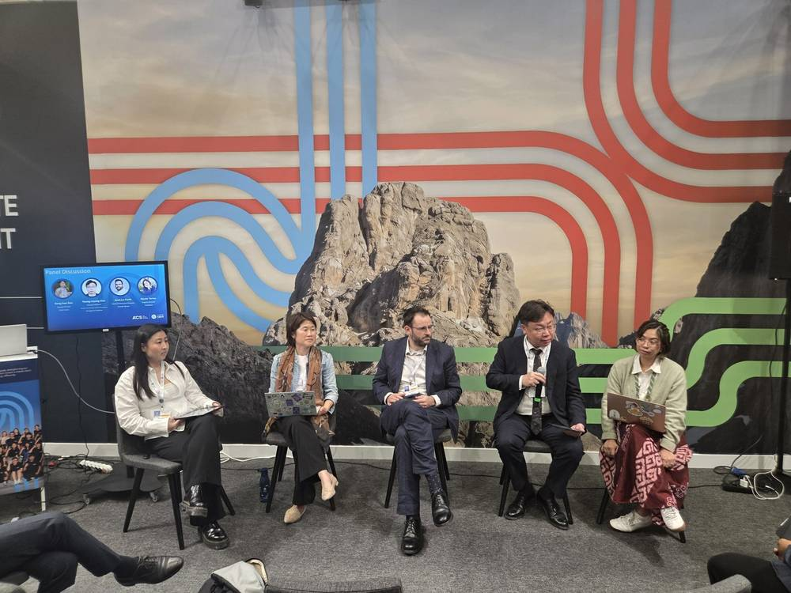

충남 탈석탄·정의로운 전환, COP31서 경험 발표

충남도가 11월 11~18일 튀르키예 안탈리아에서 석탄화력 3기 폐지와 전환기금 사례를 알렸다. 지원 특별법은 2027년 9월 16일 시행된다.
충청남도가 제31차 유엔기후변화협약 당사국총회(COP31)에서 석탄화력발전소 폐지와 정의로운 전환 경험을 발표했다. 김영명 충남도 기후환경산림국장은 11월 11일부터 18일까지 총회가 열린 튀르키예 안탈리아를 찾았다. 도는 김 국장이 국제 기후기구·정부 관계자들과 기후위기 대응 방안을 논의했다고 19일 밝혔다.
가장 비중이 컸던 자리는 14일 기후솔루션 토론회 안에 마련된 ‘충남에서 아시아로(From Chungnam to Asia)’ 세션이었다. 도는 2020년과 2025년에 석탄화력발전소 3기를 폐지한 과정을 소개했다. 노동자 고용과 지역경제 피해를 줄이려 정의로운 전환기금을 만들고 특별법 제정을 건의해 온 경과도 함께 설명했다. 도는 대체산업 육성과 고용전환에는 중앙정부의 제도적·재정적 지원이 중요하다는 입장도 밝혔다. 13일에는 키르기스스탄 기후금융센터와 이클레이(ICLEI) 동아시아본부가 연 고위급 토론에서 냉매 관리와 메탄 감축 정책을 소개했다. 도는 16일 탈석탄동맹 사무국장을 만나 전환 정책 추진에 필요한 역량을 함께 키우기로 뜻을 모았다.
국내에서는 9월 15일 「석탄화력발전소 노동자 및 폐지지역 지원 특별법」(법률 제21942호)이 공포됐다. 발전사업자는 폐지 예정일 2년 전까지 노동자 고용안정 계획과 주민 의견수렴 결과 등을 담은 폐지계획을 기후에너지환경부에 내야 한다. 시·도지사는 발전사업자, 지역주민 대표, 노동자 대표, 전문가가 참여하는 지역전환 협의체를 두고 해마다 시행계획을 심의받는다. 국가와 지자체는 폐지지역의 재생에너지 보급사업을 우선 지원할 수 있고, 대체사업자에게 국유·공유재산을 수의계약으로 빌려줄 수 있다. 이 법은 2027년 9월 16일 시행되며, 지원 조항은 시행 전 제11차 전력수급기본계획에 따라 운전을 멈춘 발전소가 있는 지역에도 적용된다.
시민에너지 관점
석탄발전소 3기를 먼저 닫은 충남의 경험은 탈석탄이 발전소 문을 닫는 일로 끝나지 않는다는 점을 보여 준다. 일자리와 지역경제를 걱정하는 주민들에게 가장 설득력 있는 답은 발전소 부지와 송전망을 재생에너지로 다시 쓰고 그 이익이 지역에 남는 구조다. 새 특별법이 지역전환 협의체에 주민 대표를 넣고 재생에너지 보급을 우선 지원하게 한 만큼, 시행령에는 주민과 노동자가 출자하는 대체사업을 우대하는 기준이 담겨야 한다. 충남이 국제무대에서 나눈 경험이 주민이 소유하는 전환으로 이어지도록 법 시행 전까지 남은 열 달을 준비 기간으로 써야 한다.
출처: 충청남도 2026-11-19 보도자료 「‘충남형 탄소중립’ 세계에 알리고 국제협력 넓혀」(기후환경산림국 기후환경정책과) 원문 보기
출처: 국가법령정보센터 2026-09-15 「석탄화력발전소 노동자 및 폐지지역 지원 특별법」(법률 제21942호, 2026. 9. 15. 제정) 원문 보기